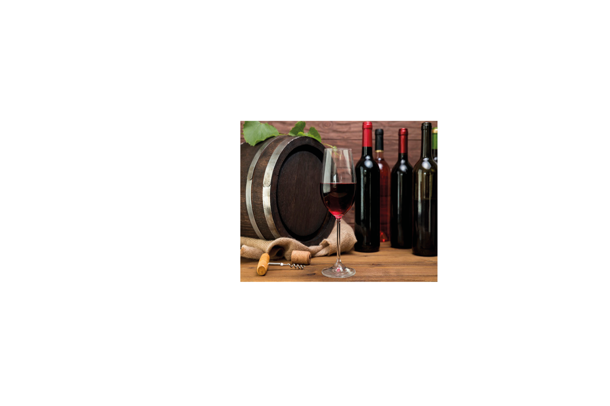
V
THE
INE
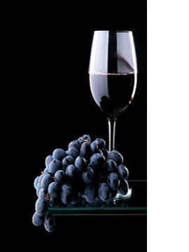
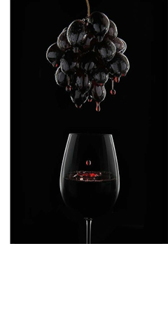
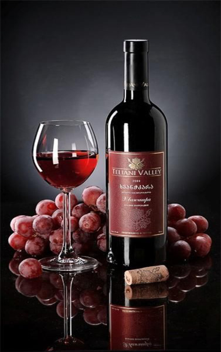
BENEFICIOS
THE VINE
Olfato - Aromas mas intensos a frtos negros como moras y ciruelas en una perfecta combinación con notas de vainilla y especias.
Gusto - Jugoso y afrutado. Se aprecia un cuerpo medio, taninos suaves y un final dulce, largo y agradable.
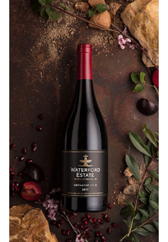
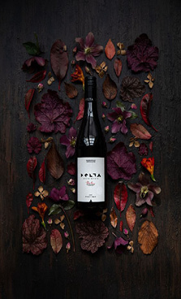
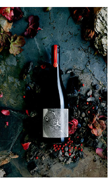
Olfato - Es un vino joven y fresco con una nariz suave que nos recuerdan aromas a berries y ciruelas negras para luego dar paso a notas
especiadas.
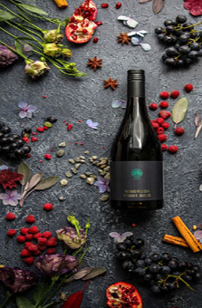
Gusto - En boca
presenta taninos suaves y equilibdos, alineados con la frutosidad que
caracteriza este vino.
pastas con salsas en base a tomate, e
incluso pescado
dependiendo del tipo de preparación.
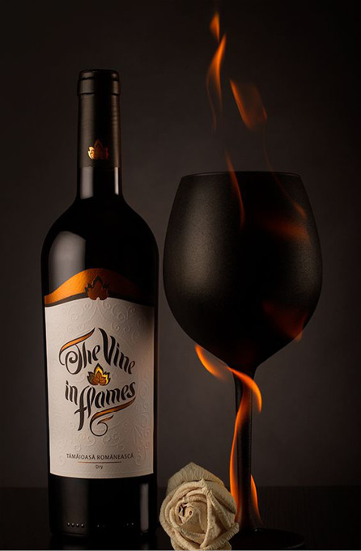
UN VASO DE VINO EN EL
MOMENTO MAS
OPORTUNO,
VALE MAS QUE
TODAS LAS
RIQUEZAS DE
LA TIERRA
GUSTAV MAHLER
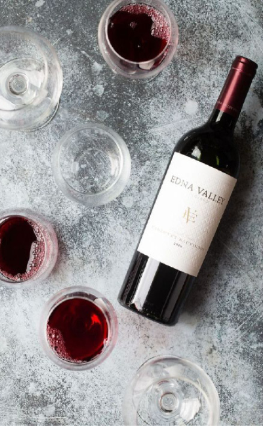
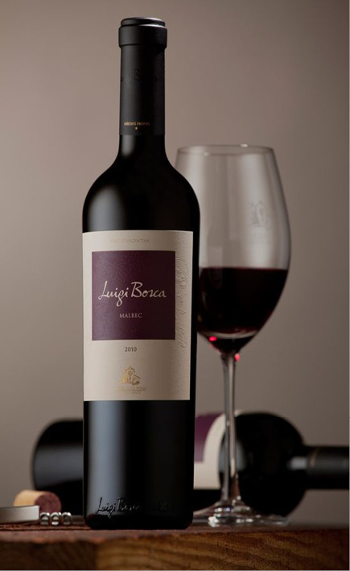
VINE
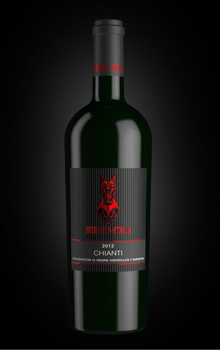
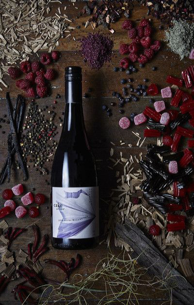
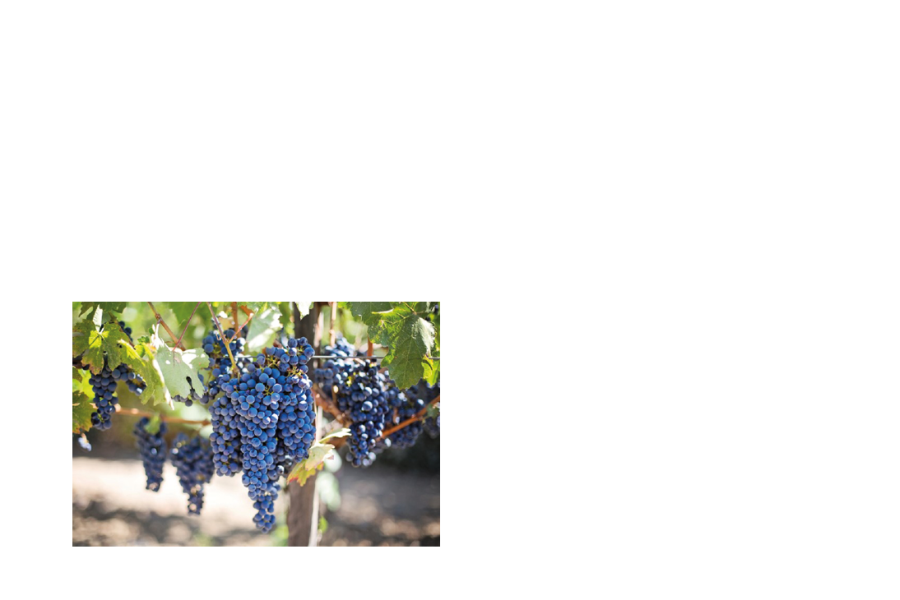
TEMPERATURA
VINO
NICOLE DAYAN ARANZALES CARVAJAL
Grupo:4 -AM
Código:87582